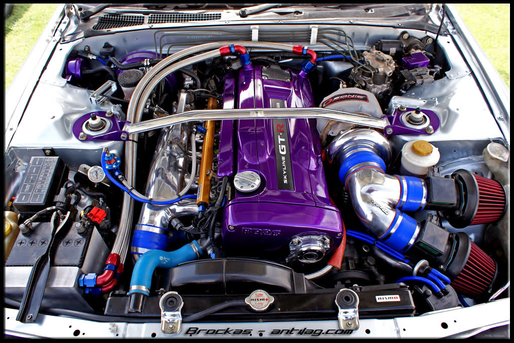
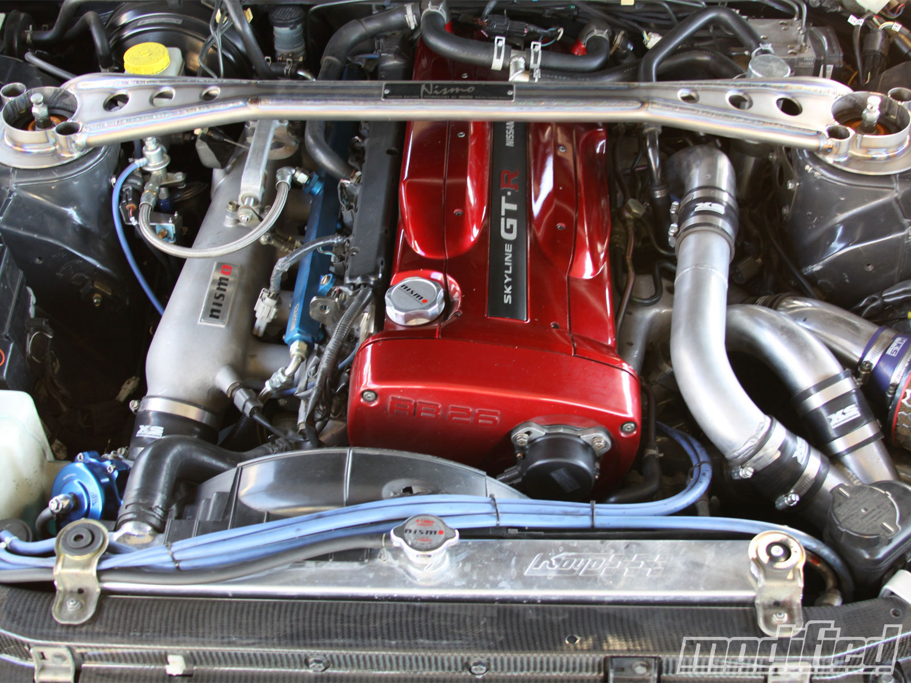
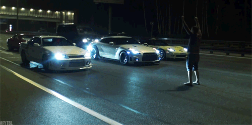

Juan Perales
Skyline r32 vs r34 comparison
pg3


The R32 GT-R was introduced in 1989 and continued the very successful racing heritage of its famous GT-R predecessors with several championship titles.
This car was built to fit Japanese Group A racing specifications and only hit the road, because the rules demanded its street homologation.
So in reality, this is a race-car for the street that comes powered by a 2.6-liter inline-6 engine capable of 500+ hp and mated to one of the most intelligent all-wheel-drive systems ever developed. However the skyline R34 is a bit different.
The R34 GT-R was introduced in January 1999 and bettered its predecessor's performance in almost every department. Basically, the new car is built upon the improved technology of its predecessors.
Since Nissan's market research had found out that most people preferred the smaller R32's nimbleness to the larger R33's handling, the R34's length was reduced by three inches to decrease its exterior dimensions and tune the R34's handling more towards that of the R32.
In correspondence with other technical improvements, the new R34 has thus become the best Skyline GT-R ever.
(this information was conatained from the website www.jbskyline.net)
(Article skyline GTR & Infiniti G)
